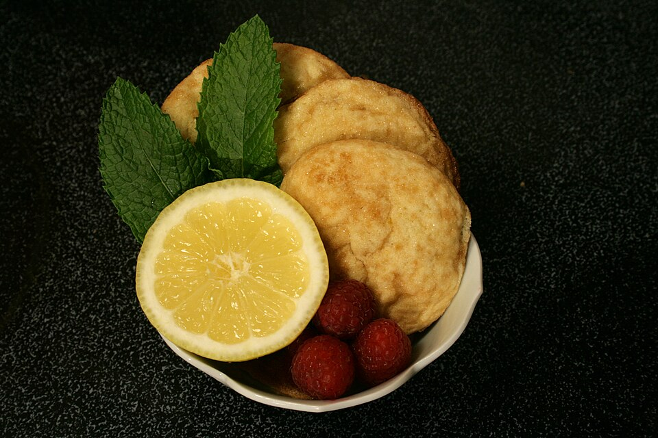

Doces · Biscoitos
Biscoitos de limão

Ingredientes
- 4 colheres (sopa) de manteiga
- ½ xícara (chá) de açúcar
- 2 e ½ xícaras (chá) de farinha de trigo
- 1 ovo
- 5 colheres (sopa) de suco de limão
- 1 colher (chá) de fermento em pó
Modo de preparo
- Bata a manteiga com o açúcar até ficar cremoso. Junte os demais ingredientes e misture até obter massa macia. Envolva em plástico e leve à geladeira por ½ hora.
- Abra a massa até cerca de 4 mm e corte os biscoitos.
- Se desejar, decore com carimbo.
- Coloque em assadeira com papel-manteiga e asse em forno médio preaquecido (180 °C) por 20 minutos ou até dourar.